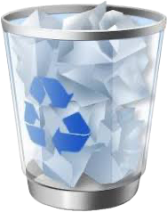
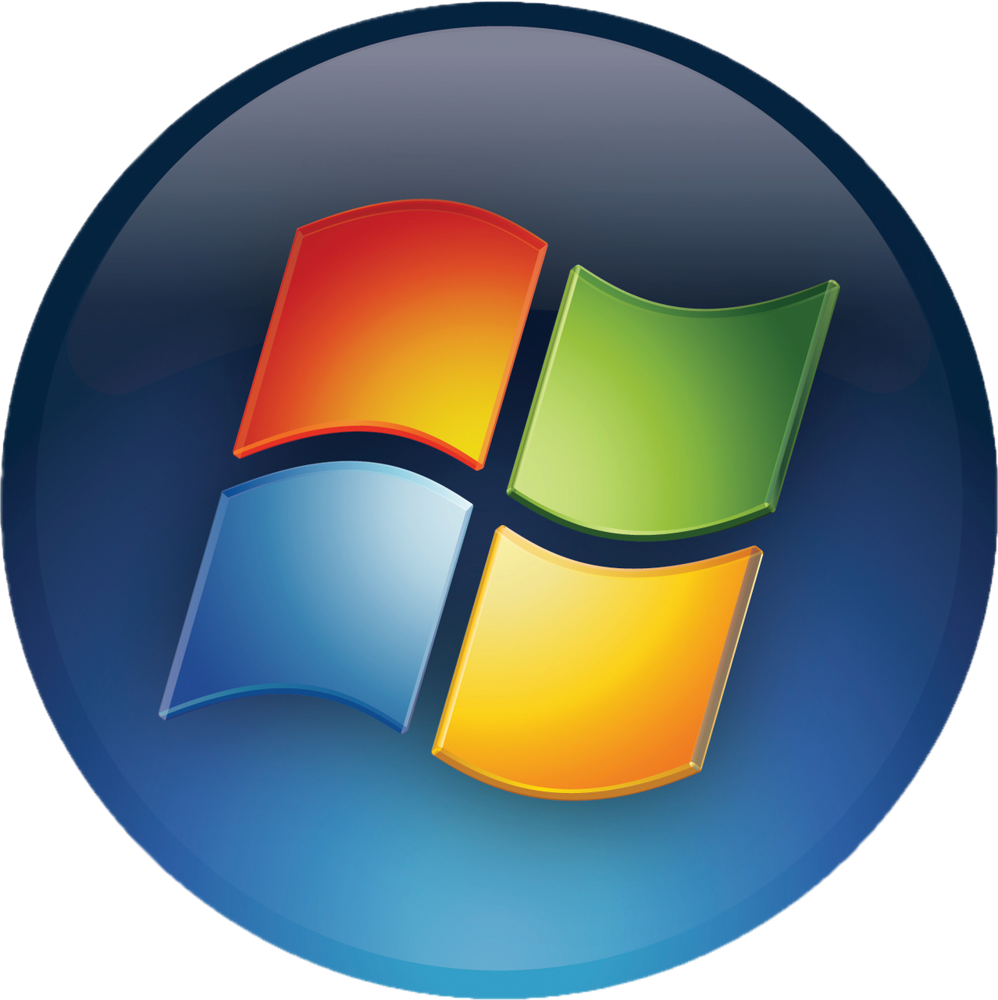

Recycle Bin
Documents
Water Simulation Suite
⚙
_
□
X
Environment
Baseplate
Fluid rendering
Particle simulation
Drag to orbit · Scroll to zoom · Right-drag to pan

Water Simulation Suite
Control Panel
12:00 PM
Water Simulation
Click to begin session
➔
GPU SPH & screen-space fluid
Procedural Fluid Dynamics Engine | Developed for CS 335
GitHub Repository